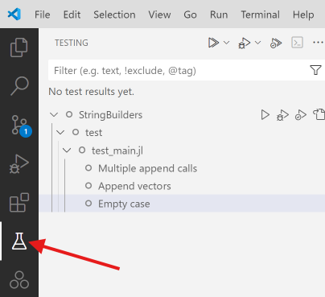
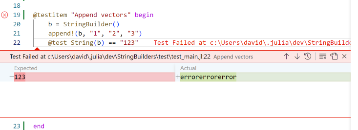
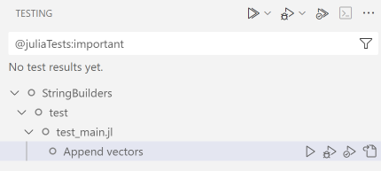
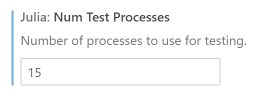
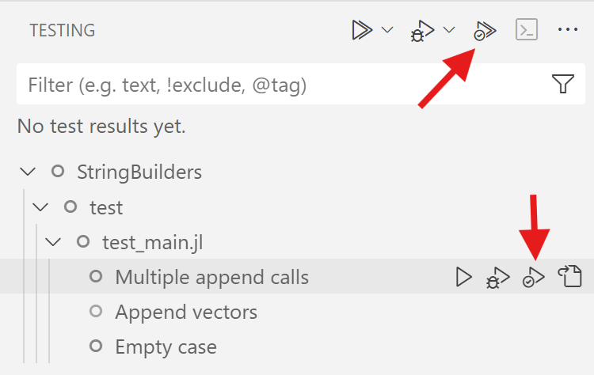
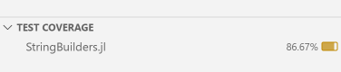

Test item framework
The test item framework is a set of packages and UI features that make it easy to write and run tests for Julia packages.
The main benefit of this framework is that test code can be structured into test items that can then easily be run individually.
The Julia VS Code extension has extensive support for the test item framework, but the test item framework itself can used completely independently of VS Code. One can write test items and run them with the command line interface (or just the standard Pkg.test functionality) without ever using VS Code.
Writing test items
The core feature of the test item framework is that you can structure tests into @testitem blocks and then individually run those, rather than having to run all your tests at once. A typical @testitem might look like this:
@testitem "First tests" begin
x = foo("bar")
@test length(x)==3
@test x == "bar"
endA @testitem always has a name (here "First tests") and then some code in a begin ... end block. The code inside a @testitem must be executable by itself, i.e. it can not depend on code that appears outside of the @testitem, unless that code is somehow explicitly imported or included from within the @testitem. There is one exception to this: the code inside the @testitem will run inside a temporary module where using Test and using MYPACKAGENAME was already executed, so anything exported from either the Test module or the package your are developing can be directly used. In the example above this applies to the foo function (presumably defined in the package that is being tested) and the @test macro.
@testitems can appear anywhere in a package. They do not have to be in the test folder, nor do they have to be in a file that is included by test/runtests.jl. In fact, @testitems can even be located inside your regular package code, for example next to the code they are testing. In that case you just need to take a dependency on the TestItems.jl package so that you have access to the @testitem macro. If you have a package MyPackage, then the file src/MyPackage.jl could look like this:
module MyPackage
using TestItems
export foo
foo(x) = x
@testitem "First tests" begin
x = foo("bar")
@test length(x)==3
@test x == "bar"
end
endIf you don’t like this inline @testitem style, you can also just put @testitem blocks into Julia files in your test folder.
Running test items inside VS Code
When you open a Julia package inside VS Code and have the Julia extension installed it will constantly (after every keypress!) look for any and all @testitems in your Julia files. If any are found, they will appear in various places in the UI.
You can find all detected @testitems in the Testing activity bar in VS Code:

The testing activity area then provides you with options to run individual @testitems, look at results etc.
VS Code will also place a small little run button next to each detected @testitem in the text editor itself:

In addition to all these UI elements that allow you to run tests, there is also UI to display test results. For example, when you run tests and some of them fail, the extension will collect all these test failures and then display them in a structured way, directly at the place in the code where a specific test failed:

Especially when you run a lot of tests with large test files this makes it much easier to find the specific test that failed, no more hunting in the REPL for file and line information!
Running tests from the command line
You can use the TestItemRunner.jl package to run @testitems as part of a traditional Pkg.test workflow.
To enable integration with Pkg.test for a package that uses @testitem, you just have to do two things:
- Add TestItemRunner.jl as a test dependency to your package
- Put the following code into the package’s
test/runtests.jlfile:
using TestItemRunner
@run_package_testsTags
You can now add tags to @testitems. Tags can be used both in the VS Code UI and via TestItemRunner.jl to filter which test items you want to run.
The syntax for adding tags is this:
@testitem "My testitem" tags=[:skipci, :important] begin
x = foo("bar")
@test length(x)==3
@test x == "bar"
endYou can then filter the test list in the VS Code UI with these same tags:

And you can also use tags in test/runtests.jl to filter down the list of tests that will run via the traditional Pkg.test entry point:
using TestItemRunner
@run_package_tests filter=ti->!(:skipci in ti.tags)The filter section below has a more complete description of the new filter keyword for the @run_package_tests macro.
Parallel test execution in VS Code
The VS Code extension has a setting that controls how many Julia processes you want to use for parallel test execution:

The default value is 1, so you have to change that to use the parallel test execution feature. A value of 0 will use as many test processes as you have processors.
Once you configured more than one test process, individual @testitems will run in parallel.
There is a trade-off here: more test processes mean more memory is needed, and there is also potentially additional overhead to get all processes to spin up and be ready to actually run @testitems.
Managing test processes
Test processes that are launched via this new test UI in VS Code are not automatically terminated, i.e. they hang around and take up memory and other resources. That of course has many benefits, namely that @testitems can be executed very quickly once the test process is up and running, but in some situations one might still want to simply terminate all currently running test processes.
To enable this, all test processes show up in the Julia Workspace, alongside any REPL or Notebook processes that might also be running. And you can terminate Julia test processes via this UI by clicking on the Stop Test Process button. In this screenshot there are four test processes running:
Filtering support in TestItemRunner.jl
You can pass a generic filter function to the @run_package_tests macro to select which @testitems you want to execute. The section above used tags to select which tests to run, but you can also filter based on the filename where a @testitem is defined or the name of the @testitem.
The way this works is that you can pass a filter function to the @run_package_tests macro. This filter function will be called once for each @testitem that is detected in your project, and the function must either return true if this test item should be run or false to not run it. @run_package_tests will pass a named tuple with three fields to your filter function that contains meta information about the specific test item, namely the field filename (the full path of the file where the @testitem is defined), name (the name of the @testitem that you defined) and tags (a vector of Symbols). With this information you can write arbitrarily complex filter conditions. For example, here I’m filtering out any @testitem that has the :skipci tag and I’m also only running tests that are defined in one specific file:
@run_package_tests filter=ti->( !(:skipci in ti.tags) && endswith(ti.filename, "test_foo.jl") )Option for default imports
When you write a @testitem, by default the package being tested and the Test package are imported via an invisible using statement. In some cases this might not be desirable, so one can control this behavior on a per @testitem level via the default_imports option, which accepts a Bool value. To disable these default imports you, you would write:
@testitem "Another test for foo" default_imports=false begin
using MyPackage, Test
x = foo("bar")
@test x != "bar"
endNote how we now need to add the line using MyPackage, Test manually to our @testitem so that we have access to the foo function and @test macro.
Sharing code across @testitems
By default @testitems do not share any code between each other and have no dependencies between each other. These properties make it feasible to run @testitems by themselves, but sometimes one wants to share common code between multiple @testitems. The test item framework provides two macros for this purpse: @testsnippet and @testmodule. These two macros can appear in any .jl file in a package.
Test snippets
A @testsnippet is a block of code that individual @testitems can run before their own code runs. If a @testitem takes a dependency on a particular @testsnippet, that snippet will run every time the @testitem runs.
The definition of a @testsnippet might look like this
@testsnippet MySnippet begin
foo = "Hello world"
endA @testitem can utilize this snippet by using the setup keyword like this:
@testitem "My test item" setup=[MySnippet] begin
@test foo == "Hello world"
endTest modules
A @testmodule defines a Julia module that can be accessed from @testitems. Such a module will only be run once per Julia test process. If for example two @testitems depend on a @testmodule, it will only be evaluated once, and then the entire module will be made available to both @testitems.
The definition of a @testmodule might look like this
@testmodule MyModule begin
foo = "Hello world"
endA @testitem can utilize this module by again using the setup keyword. Unlike with @testsnippets, the content of a @testmodule is run inside a regular Julia module, so to access content inside there one needs to prefix the module name to any name defined in the test module. A @testitem that utilizes the @testmodule just defined might look like this:
@testitem "My test item" setup=[MyModule] begin
@test MyModule.foo == "Hello world"
endNote how we access foo with the expression MyModule.foo here.
Debugging of @testitems
@testitems can be run in the debugger by launching them via the Debug Test command. This command can be access in various places in the VS Code UI. In the test main testing view it is available here:

One can also right click on the run test icon in the text editor to select the debug option:

When a test item is run in the debugger, one can set breakpoints both in the code that is being tested or in the @testitem itself and then utilize all the regular features of the Julia VS Code debugger.
Code coverage
On Julia 1.11 and newer one can run test items in a code coverage mode and display code coverage results directly in VS Code.
To run test items in code coverage mode one launches them with the command Run Tests with Coverage. This command is availble both in the main testing view

as well as in the context menu in the text editor:

The coverage results are then displayed in various ways in the VS Code UI. For example a summary view shows coverage per file:

One can see detailed line coverage information inside the text editor:

Coverage results are also displayed inline in the regular explorer part of the VS Code UI.